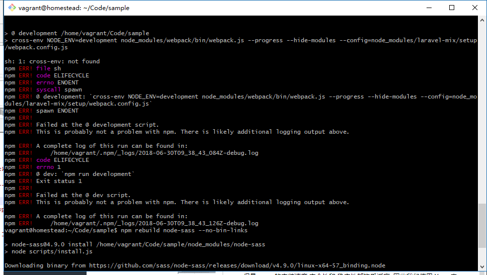

新建一个分支,针对样式的调整都在此分支上
git checkout master
git checkout -b filling-layout-style
本教程过程中将使用 Bootstrap 作为前端框架
网站导航
Laravel 默认集成了 Bootstrap 前端框架 但是还是需要自行配置一些信息
Bootstrap 是以 NPM 扩展包形式集成到 Laravel 项目中的 NPM 是 Node.js 的包管理和分发工具
Composer 的一些概念也是从 NPM 中借鉴过来的,因此 NPM 也有一个类似 composer.json 的文件 package,json 文件,Laravel 会为每个新建的项目自动生成该文件,并会在文件里默认集成一些常用的扩展包
Laravel 默认集成了一些 NPM 扩展包,我们重点看以下几个:
bootstrap-sass---------Bootstrap NPM 扩展包
jquery------jQuery NPM 扩展包
laravel-mix--------由laravel 官方提供的静态资源管理工具
vue------VUE.js 前端框架
这些扩展包,为 Laravel 提供了一套完整的前端工作流
我们可以使用 NPM 对这些扩展包进行安装
但是 npm 的安装速度 安全性和 稳定性都饱受诟病, 因此我们使用 Yarn 来作为 NPM 的替代品
让我们使用 Yarn 对扩展包进行安装,请在项目根目录下以以下命令安装
yarn install --no-bin-links
yarn add cross-env
安装完成后,让我们对 Laravel 默认生成的 app.scss 文件进行编辑 删除文件里所有内容,只留下面一行,导入 Bootstrap
resources/assets/sass/app.scss
// Bootstrap
@import "node_modules/bootstrap-sass/assets/stylesheets/bootstrap";
.scss 是 Sass ( 一种CSS 开发工具 ) 专属的文件格式
将 Bootstrap 导入成功后,我们需要以下命令将 .scss 编译为 .css 才能正常使用
npm run dev
我们也可以通过以下命令,使得每次检测到 .scss 文件发生更改 自动将其编译 成 .css 文件
npm run watch-poll

npm 报错 ( 由于windows 环境变量是%这种格式 而标准是 $开头的格式 )
打开根目录下的 package.json 去掉其中四个 cross-env

NPM 执行如果报：ENOENT: no such file or directory, scandir '/home/Vagrant/Code/sample/node_modules/node-Sass/vendor'
使用 npm 重新生成 node-saaa
npm rebuild node-sass --no-bin-links
基本上完成以上两步你的sass就配置完成了 成功如下

所有编译后的资源文件都存放在 public 文件夹中, 我们可以在 public/css 文件夹中看到刚刚编译成功之后的文件
接下来让我们更改基础视图的页面结构,为应用添加顶部导航,并加入帮助页和登录页的链接
resources/views/layouts/default.blade.php
<!DOCTYPE html>
<html>
<head>
<title>@yield('title', 'Sample App') - Laravel 入门教程</title>
<link rel="stylesheet" href="/css/app.css">
</head>
<body>
<header class="navbar navbar-fixed-top navbar-inverse">
<div class="container">
<div class="col-md-offset-1 col-md-10">
<a href="/" id="logo">Sample App</a>
<nav>
<ul class="nav navbar-nav navbar-right">
<li><a href="/help">帮助</a></li>
<li><a href="#">登录</a></li>
</ul>
</nav>
</div>
</div>
</header>
<div class="container">
@yield('content')
</div>
</body>
</html>
Laravel在运行时,是以 public 文件夹为根目录的, 因此我们可以使用下面这行代码为 Laravel 引入样式
<link rel="stylesheet" href="/css/app.css">
现在让我们更改首页信息,多加一点页面元素
resources/views/static_pages/home.blade.php
@extends('layouts.default')
@section('content')
<div class="jumbotron">
<h1>Hello Laravel</h1>
<p class="lead">
你现在所看到的是 <a href="https://laravel-china.org/courses/laravel-essential-training-5.1">Laravel 入门教程</a> 的示例项目主页。
</p>
<p>
一切，将从这里开始。
</p>
<p>
<a class="btn btn-lg btn-success" href="#" role="button">现在注册</a>
</p>
</div>
@stop

当前的样式可以继续优化:
resources/assets/sass/app.scss
// Bootstrap
@import "node_modules/bootstrap-sass/assets/stylesheets/bootstrap";
$navbar-color: #3c3e42;
/* universal */
body {
padding-top: 60px;
}
section {
overflow: auto;
}
textarea {
resize: vertical;
}
.jumbotron {
text-align: center;
}
/* typography */
h1, h2, h3, h4, h5, h6 {
line-height: 1;
}
h1 {
font-size: 3em;
letter-spacing: -2px;
margin-bottom: 30px;
text-align: center;
}
h2 {
font-size: 1.2em;
letter-spacing: -1px;
margin-bottom: 30px;
text-align: center;
font-weight: normal;
color: #777;
}
p {
font-size: 1.1em;
line-height: 1.7em;
}
/* header */
.navbar-inverse {
background-color: $navbar-color;
}
#logo {
float: left;
margin-right: 10px;
font-size: 1.7em;
color: #fff;
text-decoration: none;
letter-spacing: -1px;
padding-top: 9px;
font-weight: bold;
&:hover {
color: #fff;
}
}
上面运行着 npm run watch-poll 命令,一致监控着 scss 文件的变动
所以保存 scss 文件后就可以自动编译 ( 命令行中自动运行 )